Bit
The Bit primitives allow you to perform bit arithmetic on Marten Integer data types. Currently Marten Integers store their values as 32-bit integers. Each description of a bit operation provides an example of the operation result.
The following primitives are provided:
The output is the bitwise AND of two integers.
The output is the bitwise COMPLEMENT an integer.
The output is the bitwise OR of two integers.
The output is a bitwise shift left by one or more places on an integer. The rightmost bits of the result are set to zero (0).
The output is a bitwise shift right with sign extension by one or more places on an integer.
The output is the bitwise EXCLUSIVE-OR of two integers.
The output is TRUE if all of the set bits of an integer correspond to the set bits of a provided mask.
The output is TRUE if the bit in a specified position of an integer is set.
The output is TRUE if ONE of the set bits of an integer corresponds to one of the set bits of a provided mask.
bit-and 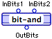
-
The bitwise AND of two integers is output. For example the result for 5 (b101) and 3 (b11) is 1 (b1).
bit-not 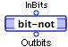
-
The bitwise COMPLEMENT of an integer is output.
bit-or 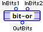
-
The bitwise OR of two integers is output. For example the result for 5 (b101) and 3 (b11) is 7 (b111).
bit-shift-l 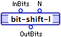
-
A bitwise shift left by one or more places for an integer is output. The N rightmost bits of the result are set to zero (0). For example the result for 5 (b101) shifted left by 2 is 20 (b10100).
-
N
<integer>: the number of places to the left that each bit is to be shifted.
bit-shift-r 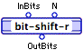
-
A bitwise shift right with sign extension by one or more places for an integer is output. For example the result for 13 (b1101) shifted right by 2 is 3 (b11) and the result for -13 (b11110011) shifted right by 2 is -4 (b11111100).
-
N
<integer>: the number of places to the right that each bit is to be shifted.
bit-xor 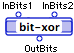
-
The bitwise EXCLUSIVE-OR of two integers is output.
test-all? 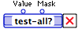
-
Returns TRUE if all of the set bits of an integer correspond to the set bits of a provided mask.
test-bit? 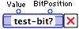
-
Returns TRUE if the bit in a specified position of an integer is set.
test-one? 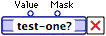
-
Returns TRUE if ONE of the set bits of an integer corresponds to one of the set bits of a provided mask. For example the result for 5 (b101) and 3 (b11) is TRUE and the result for 5 (b101) and 2 (b10) is FALSE.
Callbacks
Many languages such as C allow function arguments to be references to other functions. In the vernacular of C, these references are known as function pointers or callbacks. A callback is a reference to a function by its address, letting one function call another, without knowing its name.
The address of the callback is passed as an argument to the function, which in turn, calls the callback by address to perform specialized tasks.
For example, the following C function,
VPL_TestCallback
, requires the use of a callback:
long VPL_TestCallback(long input, void *functionPtr);
long VPL_TestCallback(long input, void *functionPtr)
{
long result = 0;
long (*addOne)(long);
addOne = functionPtr;
result = addSome(input);
return result;
}
The function
VPL_TestCallback
accepts two parameters, the first is a long integer and the second is a callback. The declaration of
addOne
indicates that the callback is a function that takes a long integer as argument and returns a long integer. An example of such a callback is:
long MyCallback(long input);
long MyCallback(long input)
{
long result = 0;
result = input++;
return result;
}
Marten callbacks let you write a Marten method that would stand in for
MyCallback
. The Marten code for MyCallback would be:
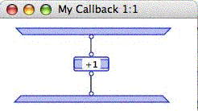
In order for this method to be used as a callback in Marten, the C function
VPL_TestCallback
must be created and a definition of it must be made available to the MacVPL engine. In addition, a definition of the structure of the callback function must also be present. An example is presented below:
VPL_Parameter _TestCallbackProc_R = { kLongType,4,NULL,0,0,NULL};
VPL_Parameter _TestCallbackProc_1 = { kLongType,4,NULL,0,0,NULL};
VPL_ExtProcedure _TestCallbackProc_F = {"TestCallbackProc",NULL,&_TestCallbackProc_1,&_TestCallbackProc_R};
VPL_Parameter _TestCallback_R = { kShortType,2,NULL,0,0,NULL};
VPL_Parameter _TestCallback_2 = { kPointerType,0,"void",1,1,NULL};
VPL_Parameter _TestCallback_1 = { kLongType,4,NULL,0,0,&_TestCallback_2};
VPL_ExtProcedure _TestCallback_F = {"TestCallback",VPL_TestCallback,&_TestCallback_1,&_TestCallback_R};
VPL_DictionaryNode VPX_MacVPL_Procedures[] = {
{"TestCallbackProc",&_TestCallbackProc_F},
{"TestCallback",&_TestCallback_F}
};
Once a Marten extension has been created with those definitions, then the external procedure TestCallback can be used in a method and the method
My Callback
can be supplied as a callback. The following code illustrates this:
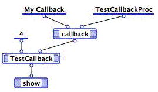
Callbacks are an advanced feature of Marten which require some knowledge of C or Pascal. A Marten method cannot be called directly by address from an external procedure. In order to provide the external procedure with an address to executable code, the Marten implementation of the callback primitive allocates a small amount of memory and writes a set of instructions into it that can be called directly by C. A reference to this memory is output from the callback primitive as an allocated block. This block is what is passed to the external procedure of interest.
Since memory is allocated, it should be freed up by using the dispose-callback primitive when the callback is no longer needed.
The first input to the callback primitive is the name of the Marten universal method to be used as the callback (for instance, "My Callback"). The required second input of the callback primitive is the name of the definition of the of the callback (in this case, "TestCallbackProc").
The optional third input of the callback primitive is a Marten object that will be passed in as the first input into the called method. This object is most usefully an instance of a class, which then allows the callback method to be data-determined (for example, "/Open"). Since this object will now be "owned" by the system, all Marten references to the object may disappear. Normally when this happens, the object would be garbage-collected. To prevent this from happening, any object passed to the callback primitive has its "system-used" flag set to TRUE. When the object is truly available for disposal, then the system-used primitive should be used to reset the flag to FALSE to allow the object to be managed correctly.
Finally, the optional fourth input of the callback primitive is a Boolean. The default value is FALSE, which means that the arguments to the callback method will be passed into the method as an equal (or plus one, if the third input is non-NULL) number of roots of the input operation. If the value is TRUE, then the arguments will be passed into the method as a list. An example of using the callback primitive in this manner is:
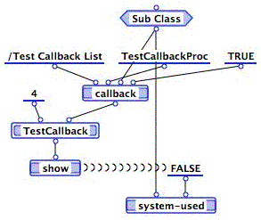
And the callback class method to be called is:
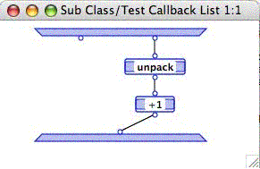
Note the use of the system-used primitive to allow the instance of Sub Class to be garbage-collected.
Marten provides the following primitives for working with callbacks:
callback 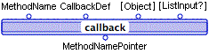
-
Returns a pointer to universal method suitable for use as a callback to an external procedure.
For background on the use of callbacks in Marten, see See Callbacks.
-
CallbackDef
<string>: the name of the definition of the of the callback
-
Object
<<any>>: the object that will be passed as the first input into the called method.
-
ListInput?
<boolean>:
MethodNamePointer
<ABlock@>
dispose-callback 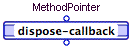
-
Disposes the memory in the pointer used for the callback. This primitive must be called after the routine to which the MethodPointer was passed completes execution and returns.
Data
The data primitives provide miscellaneous functionality for working with Marten data. The following primitives are provided:
Creates a copy of a Marten data element.
Returns the class name and a list of instance attribute values of a provided instance.
Creates and returns an instance of a specified class with a set of provided instance attribute values.
Creates a shallow copy of a Marten data element.
copy 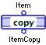
-
Makes a copy of a Marten data element. If the item is a complex data type (instance or list), the referenced complex objects in the attributes or list slots are recursively copied to arbitrary depth. Referenced simple objects (integers, strings, and so on) contained in the complex object are not copied, but their use counts are incremented.
inst-to-list 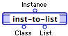
-
Returns the class name and a list of instance attribute values of a provided instance.
Class
<string>: the name of the class from which the instance was spawned.
-
List
<list>: a list of the values of all instance attributes.
Attribute names are not provided. Attribute values are listed in the same order in which attributes are displayed in the Attribute window for the owning class.
list-to-inst 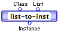
-
Creates and returns an instance of a specified class with a set of provided instance attribute values.
-
List
<list>: a list of values for the class' instance attributes. The list should be ordered identically to the order displayed in an Attribute window for the owning class.
The specified class must already exist, and the number of its instance attributes must equal the length of the provided list of instance attribute values.
shallow copy 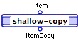
-
Makes a shallow copy of a Marten data element. If the item is a complex object (instance or list), the referenced objects (both complex and simple) in the attributes or list slots are not copied, but their use counts are incremented.
File
The Marten File primitives provide functionality at a slightly higher level than that of the Macintosh File System. They are intended to provide enough functionality to cover all common file operations.
The following primitives are provided:
Creates a new file of a specified type.
Creates a new file of type 'TEXT'.
Deletes a specified file.
Opens an
Open File
dialog that lets a user locate, select, and open a file.
Opens a file with a specified access level.
Opens a
Save File
dialog that lets a user save a file in a specified location.
Reads in the contents of the file and places them into an external block
Reads in the contents of a Marten object file and returns the object.
Reads in the contents of a text file and returns a String.
Writes the provided object to the specified file.
Writes a provided string to a specified text file.
close-file 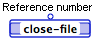
-
Closes the file identified by the file reference number created by the primitive
open-file
.
The primitive can FAIL if the file cannot be closed.
create-object-file 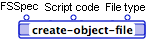
-
Creates a new file on disk. If a file already exists, it is deleted and then the new one created.
-
Script code
<Integer>: A MacOS X script code returned by the
put-file
primitive.
-
File type
<Integer>: A MacOS X file type (for example, 'TEXT').
The primitive can FAIL if the file cannot be created.
create-text-file 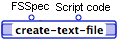
-
Creates a new file on disk of file type 'TEXT'. If a file already exists, it is deleted and then the new one created.
-
Script code
<Integer>: A MacOS X script code returned by the
put-file
primitive.
The primitive can FAIL if the file cannot be created.
delete-file 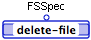
-
Deletes the specified file.
The primitive can FAIL if the file cannot be created.
get-file 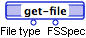
-
Opens a MacOS X Open File Navigation Dialog. If the user selects a file, the type and the FSSpec are returned. If user cancels, then get-file FAILs.
File type
<Integer>: A MacOS X file type (for example, 'TEXT').
This primitive fails if the user cancels the dialog.
-
FSSpec
<External Block>: A MacOS X FSSpec structure.
-
open-file 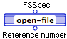
-
Opens the file identified by an FSSpec and returns a file reference number to be used by primitives such as
close-file
and
read-text
.
Reference number
<integer>: The MacOS X file reference number.
This primitive can FAIL if file cannot be opened.
put-file 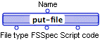
-
Opens a MacOS X Save Location Navigation Dialog. If the user saves the file, the type, the FSSpec, and the script code are returned. If the user cancels, then this primitive FAILs.
File type
<Integer>: A MacOS X file type (for example, 'TEXT').
-
FSSpec
<External Block>: A MacOS X FSSpec structure.
-
Script code
<Integer>: A MacOS X script code.
The primitive FAILs if the user cancels the dialog.
read-buffer 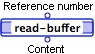
-
Reads in the contents of the file and places them into an external block.
Content
<External Block> The contents of the file. The type of block is "void".
This primitive can FAIL if the contents cannot be read.
read-object 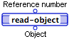
-
Reads in the contents of a Marten object file and returns the object.
Object
<any>: Any Marten object.
-
Can FAIL if contents cannot be read.
read-text 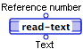
-
Reads in the contents of a text file and returns a String.
Text <String>: The text contained in the file.
This primitive can FAIL if the content cannot be read.
write-object 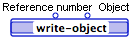
-
Writes the provided object to the specified file.
-
Object
<any>: Any Marten object.
This primitive can FAIL if the object cannot be written to file.
write-text 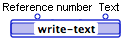
-
Writes the string to the text file identified by the file reference number.
-
Text
<String>: The text to be written to the file.
This primitive can FAIL if the text cannot be written to file.
Graphics
The Graphics primitives perform manipulations and calculations on the following types:
Rect.
These are represented textually in Marten as two, three, or four integers, respectively, separated by spaces, inside braces. For example,
{ 5 8 }
is a Point, with a vertical coordinate of 5 and a horizontal coordinate of 8.
{ 10 15 20 }
is an RGBType, with a red component of 10, a green component of 15, and a blue component of 20. Finally,
{ 0 0 100 100 }
is a Rect, with top and left coordinates of 0, and bottom and right coordinates of 100.
For more information on these datatypes, refer to the
Marten Users Guide
.
The following primitives are provided:
Creates a Mac OS X Point from supplied co-ordinates.
Creates a Mac OS X Rect from supplied co-ordinates.
Creates a Mac OS X RGB specifier from supplied colour values.
Returns the co-ordinates specified by a Mac OS X Point.
Returns the co-ordinates specified by a Mac OS X Rect.
Returns the individual colour values specified by a Mac OS X RGB.
list-to-Point 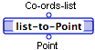
-
Returns the point two specified by co-ordinates.
Point
<External Block>: a MacOS X Point data structure.
list-to-Rect 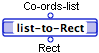
-
Returns the Rect specified by a set of co-ordinates.
Point
<External Block>: a MacOS X Rect structure.
list-to-RGB 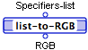
-
Returns the specified RGB structure.
RGB
<External Block>: a MacOS X RGB structure.
Point-to-list 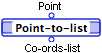
-
Returns the list of two coordinates specified by a Point.
Specifiers-list
<list>: the two integers specifying the co-ordinates of the Point.
Rect-to-list 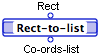
-
Returns the list of four coordinates specified by a Rect.
Co-ords-list
<list>: the four integers specifying the co-ordinates of the Rect.
RGB-to-list 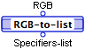
-
Returns the list of three colour specifiers of a Rect.
Specifiers-list
<list>: the three integers specifying the individual colors of the RGB.
List
The list primitives provide a number of functions for working with lists of all types. The following primitives are provided:
Searches a list for a specified item and returns the index of the first occurrence of the item.
Concatenates two or more lists.
Returns the number of elements in a list.
Adds elements to the front of a list.
Adds elements to the end of a list.
Remove the first
n
elements of a list.
Removes the
nth
element of a list.
Removes the last
n
elements.
Searches a list for a specified instance.
Performs a binary search on a list.
Returns the
nth
element of a list.
Inserts a new item in a list at a specified position.
Creates a new list and lets you specify values programmatically.
Creates a new list of provided items.
Reverses the order of items in a list.
Sets the value of the
nth
element in a list.
Sets the value of the
nth
element in a list, directly modifying the elements (not copies).
Sorts the elements in a list.
Splits a list into two lists at a specified position.
Returns the first
n
elements of a list.
(in)
-
Searches a list for a specified item and returns the index of the first occurrence of the item. Optionally, you can pass an index number which will be treated as the first element of the search. Note that a list element is found only if it equals
Item
in the sense defined by the
=
primitive.
-
Item
<any>: the value to search for.
-
StartIndex
<integer>: the index of the first item to be checked.
FoundIndex
<integer>: the index of the found item or zero (0) if the item does not occur in the list.
(join)
-
Concatenates two or more lists.
-
List2
<list>: the list whose items are to follow the items of the List1 items in the new list.
-
List3 ...
<list>: any remaining lists, one per terminal.
(length)
-
Returns the length (number of elements) of a list.
attach-l
-
Creates a new list by concatenating one or more provided elements (
Element1
...) and an existing list.
-
Element2 ...
<any>: the second and subsequent items, one per terminal.
-
List
<list>: the existing list.
NewList
<list>: the new list.
attach-r
-
Creates a new list by concatenating an existing list and one or more provided elements.
-
Element1
<any>: the first item to be appended to the list.
-
Element2 ...
<any>: any remaining items to be appended to the list, one per terminal.
NewList
<list>: the new list.
detach-l
-
For N+1 output roots, returns the first N elements of a list and a list containing the remaining elements.
Element1
<any>: the first element in the list
-
Element2 ...
ElementN
<any>: elements 2 - N of the list.
-
OutList
<list>: the remaining elements in the list.
detach-nth
-
Returns the Nth element of a list and a new list that results from removing the Nth element from the original list.
-
N
<integer>: the index of the item to be removed from the list.
OutList
<list>: the new list.
-
Element
<any>: the item removed the original list.
detach-r
-
For N+1 output roots, returns the last N elements of a list and a new list containing the remaining elements of the original list.
OutList
<list>: a new list containing the remaining elements of the original list.
-
Element1
<any>:
-
Element2 ... ElementN
<any>:
find-instance
-
Given a list of Instances, returns the index of the first instance containing a specified attribute with a provided value.Optionally, you can provide an index number to use as the starting point of the search.
-
AttributeName
<string>: the name of the attribute to search.
-
Value
<any>: the value of the attribute to search for.
-
StartIndex
<integer>: the index within the list at which the search is to start.
FoundIndex
<integer>: if the instance was found, this parameter contains the index of the instance; otherwise it contains a value of zero (0).
-
Instance
<<instance>> | <null>: if the instance was found, this parameter contains the instance; otherwise it has a value of NULL.
find-sorted
-
Uses a binary search to find an item in a SORTED list of numbers, strings, or instances. Using find-sorted, as opposed to find-instance, is faster because it uses a binary search.
-
Item
<string | number>: the value to be searched for.
-
AttributeName
<string>: if the list is a list of instances, this parameter passes the name of the attribute to be searched for the given value.
Found
<boolean>:
-
Index
<integer>: if the Found parameter has a value of TRUE, this parameter contains the index of the item in the list that had the specified value. If the Found parameter has a value of FALSE, this parameter stores the index where the specified value can be inserted.
get-nth
-
Given a list, returns an element specified by index. This primitive can also return elements from nested lists by passing it additional index numbers.
-
N1
<integer>: for a simple list, the index of the element to be returned; for a list of lists, the index of the nested list.
-
N2 ...
<integer>: the index of the element within a nested list or the index of another nested list. The final terminal must be the index of the element to be returned in the deepest nested list.
insert-nth
-
Creates a new list by inserting a provided element at a specified position in an existing list.
-
Element
<any>: the item to be added to the existing list.
-
Index
<integer>: the position at which the item is to be placed in the new list.
Element
<list>: the new list.
make-list
-
Creates a list of a specified length. The initial values of items in the list can be all NULLs, all identical values, or you can provide an initial value for the first item in the list and have subsequent item values based on addition of a provided value.
-
Start
<any>: the value of the first item in the list and if the
Step
parameter is not provided, the value of all items in the list. If the
Start
parameter is not provided, all items of the list are created with an initial value of NULL.
-
Step
<number>: the number to add to the value of a list item to obtain the value of the next item in the list.
List
<list>: the new list.
pack
-
Creates a list of list of one or more elements.
-
Element2...
<any>: the value of subsequent items in the list, one per terminal.
List
<list>: the resulting list.
reverse
-
Creates a new list by reversing the order of items in an existing list.
OutList
<list>: the new list.
set-nth
-
Creates a new list by changing the value of a list item, specified by index, in an existing list. This primitive can be used to change values in nested lists by providing additional indices.
-
Item
<any>: the new value of the specified list item.
-
N1
<integer>: for a simple list, the index of the element to be modified; for a list of lists, the index of the nested list.
-
N2 ...
<integer>: the index of the element within a nested list or the index of another nested list. The final terminal must be the index of the element to be given a new value in the deepest nested list.
OutList
<list>: the resulting list.
set-nth!
-
Changes the value of a list item, specified by index. This primitive can be used to change values in nested lists by providing additional indices.
-
N1
<integer>: for a simple list, the index of the element to be modified; for a list of lists, the index of the nested list.
-
N2 ...
<integer>: the index of the element within a nested list or the index of another nested list. The final terminal must be the index of the element to be given a new value in the deepest nested list.
List
<list>:
-
This primitive should be used with care, as it modifies its input data directly, rather than modifying copies of that input data. This can affect the results of other operations which independently reference the same data. It may be important, therefore, to use synchros to ensure desired results.
sort
-
Performs a simple sort on a list of numbers or strings, or sorts a list of instances on the value of a specified attribute.
-
Duplicate
<boolean>: if TRUE, items with identical values are not duplicated in the sorted list. In the case of a list of instances, if this parameter has a value of TRUE, instances with identical attribute values are not duplicated in the sorted list.
-
AttributeName
<string>: this parameter can only be provided when the InList parameter contains a list of instances. It specifies the name of the attribute that the instances are to be sorted on.
-
CheckAllInstances
<boolean>: if all instances are of the same class, pass a value of TRUE with this parameter since it indicates that the specified attribute is at the same location in all instances.
OutList
<list>: the sorted list.
split-nth
-
Splits an existing list into two new lists; the first list consisting of the first N elements of the original list and the second list consisting of the remaining elements of the original list.
-
N
<integer>: the number of items to take from the existing list to create the first of the two new lists.
Prefix
<list>: the list consisting of the first N elements of the existing list.
-
Rest
<list>: the list consisting of the remaining elements of the existing list.
unpack
-
Given N output roots, returns the first N elements of a list. The list must contain at least N elements.
Element1
<any>: the first element in the list.
-
Element2 ...
ElementN
<any>: elements 2 - N of the list.
Memory
The following primitives allow you to work directly with memory:
Returns the Marten object at the specified address.
Casts a pointer as an integer.
Returns an integer from a specified location.
Returns a real number of a specified length from a specified location.
Returns a string of a specified length from a specified location.
Returns the address of a Marten object.
Places an integer into a specified memory location.
Places a real number into a specified memory location.
Places a string into a specified memory location.
Returns the address of the first character in a string.
Casts an integer as a pointer.
address-to-object
-
Returns the Marten object at the specified address. The address must have been generated by a call to object-to-address on the same machine (same address space), and you must be certain that the object still exists at that address.
from-pointer
-
If the provided pointer is the address of a block of memory, then this primitive returns that address represented as an integer. In effect, it performs a cast of the pointer type to an integer.
Address
<integer>:
-
If
Pointer
= ABlock@16#00211A00,
Address
= 16#00211A00.
get-integer
-
Returns an integer of a specified size from a particular location within a memory block.
-
Offset
<integer>: the offset, in bytes, at which to start reading the integer.
-
Size
<integer>: the size, in bytes, of the integer. Acceptable values are:
Buffer
<ABlock> | <ABlock@> | <ABlock@@ >| <integer>:
-
NextOffset
<integer>: the value of the Offset parameter added to the value of the Size parameter.
-
Value
<integer>: the integer read.
get-real
-
Returns a real number of a specified length from a specified location within a memory block.
-
Offset
<integer>: the position within the memory block at which to begin reading the real number.
-
Size
<integer>: the size, in bytes, (4, 8, or 10) of the real number to be read. Acceptable values are:
Buffer
<ABlock> | <ABlock@> | <ABlock@@ >| <integer>:
-
NextOffset
<integer>: the value of the Offset parameter plus that of the Size parameter.
-
Value
<real>: the real number read.
get-text
-
Returns a string of a specified size from a particular location within a memory block.
-
Offset
<integer>: the offset within the memory block at which to start reading.
-
Size
<integer>: must be greater than or equal to 0 and less than or equal to 65535 when using the interpreter and can be up to 4294967295 bytes when using the compiler).
Buffer
<ABlock> | <ABlock@> | <ABlock@@ >| <integer>:
-
NextOffset
<integer>: the value of the Offset parameter plus that of the Size parameter.
-
String
<string>:
object-to-address
-
Returns the address of any Marten object.
put-integer
-
Converts a provided integer into an integer of a specified size and places it at a specified location in a memory block.
-
Offset
<integer>: the offset within the memory block at which to write the integer.
-
Size
<integer>: the size, in bytes, of the integer. Acceptable values are:
Buffer
<ABlock> | <ABlock@> | <ABlock@@ >| <integer>:
-
NextOffset
<integer>: the value of the Offset parameter plus the value of the Size parameter.
put-real
-
Converts a real into a floating point value of a specified size and places it in a particular location in a memory block.
-
Offset
<integer>: the position in the memory block at which to write the floating point value.
-
Size
<integer>: the size, in bytes, of the floating point value. Acceptable values are:
10
-
Value
<real> or <integer>:
Buffer
<ABlock> | <ABlock@> | <ABlock@@ >| <integer>:
-
NextOffset
<integer>: the value of the Offset parameter plus the value of the Size parameter.
put-text
-
Writes a specified number of bytes from a string to a particular position in a memory block.
-
Offset
<integer>:
-
Size
<integer>: must be greater than or equal to 0 and less than or equal to 65535 in the interpreter or 4294967295 bytes in the compiler.
-
String
<string>:
Buffer
<ABlock> | <ABlock@> | <ABlock@@ >| <integer>:
-
NextOffset
<integer>: the value of the Offset parameter plus that of the Size parameter.
string-address
-
Returns the address of the first character in a string. The string should be locked whenever an address is taken or used.
to-pointer
-
If
Address
is the integer address of a block in memory, then
Pointer
is that same address represented as a generic pointer type in Marten. In effect, it performs a cast of the integer type to a pointer.
Pointer
<ABlock@>:
-
Example If
Address
= 16#00211A00,
Pointer
= ABlock@16#00211A00.
String
The following primitives are provided for working with strings:
Returns the length of a string in bytes
Returns the character represented by a specified ASCII code.
Returns the textual value of a provided string.
Returns the location of a substring within a provided string.
Returns the string representation of an integer.
Concatenates two or more strings.
Returns the number of characters in a string.
Returns a substring of a specified string.
Returns two strings, the first
n
characters in one string and the remaining characters in the second string.
Returns the integer representation of a provided string.
Returns two substrings, the last
n
characters in one string and the remaining characters in the second string.
Returns the ASCII integer representation of a provided string.
Returns the string representation of a provided Marten object.
byte-length
-
Returns the length of a specified string in bytes rather than characters. Use this primitive to return the length of a specified string in bytes.
Length
<integer>: length of the string, in bytes.
from-ascii
-
Returns the character representation of one or more ASCII codes.
String
<string>: a string containing the characters represented by the provided ASCII codes.
-
If
CharCodes
= ( 72 101 108 108 111 ), then
String
= "Hello". If
CharCodes
= 72,
String
= "H".
from-string
-
Returns the value textually represented by
String
. Type cannot be a class or External structure.
In producing output, this primitive follows Marten rules for unparsing. For details on data types, refer to the
Marten User Guide
.
Data
<any*> | Point | Rect | RGBType
"in"
-
Returns the location of a substring in a provided string.
-
SubString
<string>: the substring to search for.
-
StartIndex
<integer>: the index of the character in the String parameter at which to start the search. This parameter must be a positive number.
FoundIndex
<integer>: if the substring was found, the index in the string of the first character of the substring; zero (0) otherwise.
If
SubString
is an empty string,
FoundIndex
returns 1.
integer-to-string
-
Returns the four character string representation of an integer.
String
<string>:
-
Example If
Integer
= 16#54455854 ( "TEXT" ), then
String
= "TEXT".
"join"
-
Concatenates two or more strings.
-
String2
<string>:
-
String3 ...
<string>:
"length"
-
Returns the number of characters in a string.
middle
-
Returns a substring of a specified number of characters from a provided string beginning at a specified position in the string.
-
N
<integer>: the number of characters to return.
-
Index
<integer>: the index within the
String
parameter corresponding to the first character of the substring.
prefix
-
Returns two substrings; the first consisting of the first
N
characters of the string and the second consisting of the remaining characters.
OutString
<string>:
-
Suffix
<string>:
-
The following example extracts the first and last names; the space character separates the two names. The second root of the prefix primitive returns the last name, while suffix is used to strip the trailing blank from the first name.
string-to-integer
-
Returns the integer representation of a four character string.
Integer
<integer>:
-
Example If
String
= "TEXT", then
Integer
= 16#54455854 ( "TEXT" ).
suffix
-
Returns two substrings, one consisting of the last
N
characters of the provided string, the other consisting of the remaining characters.
Prefix
<string>: the initial characters of the
Instring
parameter; those not included in the
Suffix
parameter.
-
Suffix
<string>: the last
N
characters of the
Instring
parameter.
to-ascii
-
Returns the list of integers that are the ASCII representations of the characters in a provided string.
CharCodeList
<list>:
-
Example If
String
= "Hello", then
charCodeList
= ( 72 101 108 108 111 ).
to-string
-
Returns the textual representation of provided data.
String
<string>: the textual representation of the provided data. This parameter has a value of NULL if the provided data cannot be represented textually; instances and structures other than Point, Rect, and RGBType.
This primitive follows Marten's unparsing rules for working with datatypes. For details, refer to the Marten User Guide.
System
The following system primitives are provided:
Returns the names of all ancestors of a provided class.
Returns the names of all attributes of a given class.
Returns the names of all immediate subclasses of a given class.
Returns the names of all classes in a project.
Returns the names of all subclasses of a given class.
Returns a list of methods of a given type.
Returns the list of all persistents in a project.
ancestors
-
Returns the names of all ancestor classes of a class specified by Instance or ClassName.
Ancestors
<list>: the list of names of ancestor classes. The list is ordered such that the first name in the list is the immediate superclass of the input class. If the input class is a top-level class, the list is empty.
attributes
-
Returns the names of all instance attributess and class attributes of a specified class.
ClassAttrs
<list;>: a list of the names of class attributes in the specified class.
-
InstanceAttrs
<list>: a list of the names of instance attributes in the specified class.
children
-
Returns the names of all classes that inherit DIRECTLY from a specified class.
Children
<list>: a sorted list of class names.
Contrast the purpose of this primitive with that of the descendants primitive.
classes
-
Returns the names of all classes in a project.
Classes
<list>: a list of the names of all classes.
descendants
-
Return the names of all classes that are descendants of a specified class.
Descendants
<list of string>: a sorted list of the names of all classes that are descendants of the specified class.
Contrast the purpose of this primitive with that of the children primitive.
methods
-
If the input is an Instance or aClass name, then Methods, GetMethods, and SetMethods are respectively lists of the names of simple or initialization methods, get methods, and set methods in the class specified by Instance or ClassName. If input is None, Methods is the list of names of Universal methods, and GetMethods and SetMethods are both ().
Methods
<list>:
-
GetMethods
<list>:
-
SetMethods
<list>:
-
No distinction is made between Universal methods and primitives. If no input parameter is provided, this primitive returns a list of names of Universal methods and primitives.
persistents
-
Returns the names of all persistents in the project.
Persistents
<list of strings>: a list of the names of all persistents.
Type
The following type primitives are provided:
Succeeds if the provided data is boolean.
Returns the name of a referenced External structure.
Succeeds if the provided data is an instance.
Succeeds if the provided data is an integer.
Succeeds if the provided data is a list.
Succeeds if the provided data is an integer to a real number.
Succeeds if the provided data is a real number.
Succeeds if the provided data is string.
Returns the type of a provided Marten object.
boolean?
-
Succeeds if the provided data is boolean, (TRUE or FALSE).
external-type
-
StructName is the name of the external type whose structure, pointer, or handle is referred to by Data. A list of possible external type names can be found in the Info window under External Structures.
instance?
-
Succeeds if the provided data is an instance of a class.
integer?
-
Succeeds if the provided data is an integer.
list?
-
Succeeds if the provided data is a list.
number?
-
Succeeds if the provided data is areal or an integer.
real?
-
Succeeds if the provided data is a real number.
string?
-
Succeeds if the provided data is a string.
type
-
Returns the type of the provided Marten data.
Type
<string>: one of the following: boolean, integer, list, external, none, null, real, string or undefined.